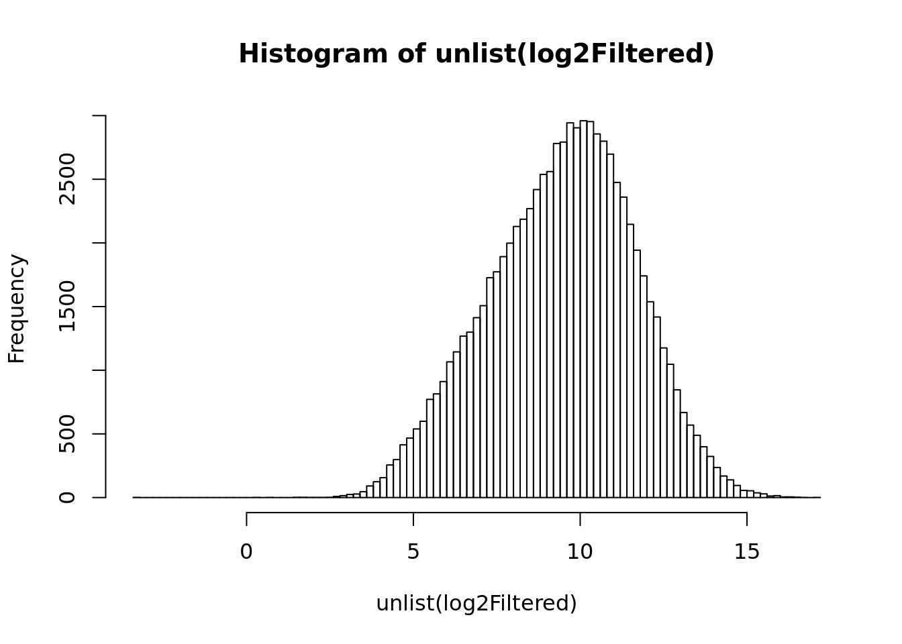

datatype dataset epsilon forceDownload undetectedLimit filePrefix
1 proteome fa 0.1 FALSE 100 pavkovic2019_proteome_fa_
The ANOVA test allows to select genes whose inter-group variance is significantly higher than the so-called residual variance, i.e. the variance remaining after removing the inter-group variance from the todal variance.
In the context of detection of differentially expressed genes, ANOVA can be thought of as generalization of the Welch test. Indeed, Welch and Student tests were conceived to test the equality of the mean between two groups (for example one subtype of interest and all the other subtypes), whereas ANOVA simultaneously tests the equality of the mean for multiple groups.
\[H_0= \mu_1 = \mu_2= \cdots = \mu_g\]
We could thus use ANOVA to establish a general ranking criterion that would select the genes showing higest differences between ALL subtypes, without specifying a priori which particular subtypes have to be different.
In a first time, we will apply the ANOVA test to one arbitrarily selected gene. We will then see how to run this test on each row of the expression matrix.
Some remarks about the implementation.
In contrast with the Welch test, which was a 2-groups test, ANOVA can be used to compare multiple groups in a single analysis. For ANOVA, we will use the original sample labels (with all the ALL subtypes explicitly named), rather than the one.vs.other vector that we created for 2-groups analysis.
We will run a single-factor ANOVA, with gene expression as values, and sample labels as groupinfeature.
The R methods aov() and anova() take as input a data frame with the values (gene expression values) in the first column, and the groupings (sample labels) in the second one.
R proposes two methods for the ANOVA test. The aov() function automatically fits a linear model and runs the anova test. However it is conceived for balanced groups (all groups should have smiliar effectives), which is not our case (some of the ALL subtypes have very few samples). With our data, it returns a warning “Estimated effects must be unbalanced”. Hereafter we will run both approaches to illustrate their implementation., but the second one (anova()) is the most flexible.
Even though anova() can handle unbalanced groups, we should keep in mind that the power of the test depends on the fact that we dispose of a sufficient number of samples per group. It might thus be wise to restrict the analysis to the groups containing a minimum number of samples (for example at least 8).
x <- log2Filtered
i <- 123 ## Select an arbitrary feature
## Build a data frame with gene expression values in the first column,
## and sample labels in the second column.
feature.expr <- unlist(x[i,]) ## Select the expression profile for this feature
feature.for.anova <- data.frame("expr" = feature.expr, "group" = metadata$condition)
kable(feature.for.anova)| expr | group | |
|---|---|---|
| normal_1 | 8.713686 | normal |
| normal_2 | 9.181488 | normal |
| day1_1 | 8.780842 | day1 |
| day1_2 | 8.763192 | day1 |
| day2_1 | 8.904764 | day2 |
| day2_2 | 9.229146 | day2 |
| day7_1 | 8.297251 | day7 |
| day7_2 | 9.344917 | day7 |
| day14_1 | 7.835267 | day14 |
| day14_2 | 8.631177 | day14 |
## Run the aov() method to check the warnings
feature.aov.result <- aov(formula = expr ~ group, data = feature.for.anova)
print(feature.aov.result)Call:
aov(formula = expr ~ group, data = feature.for.anova)
Terms:
group Residuals
Sum of Squares 0.8208933 1.0277254
Deg. of Freedom 4 5
Residual standard error: 0.4533708
Estimated effects may be unbalanced## We thus try the indirect approach: fit a linear model and run anova on it.
feature.anova.result <- anova(lm(formula = expr ~ group, data = feature.for.anova))
print(feature.anova.result)Analysis of Variance Table
Response: expr
Df Sum Sq Mean Sq F value Pr(>F)
group 4 0.82089 0.20522 0.9984 0.4863
Residuals 5 1.02773 0.20555 ## Extract the p-value from the ANOVA result
# attributes(feature.anova.result)
pval <- as.numeric(unlist(feature.anova.result)["Pr(>F)1"])
print(pval)[1] 0.4862801[1] 3911.637## Summarise the result in a vector
feature.anova.summary <- data.frame("g" = i,
"name"=row.names(x[i,]),
"pval"=pval,
"eval"=eval,
"sig"=-log(eval, base=10))
kable(feature.anova.summary, caption = "Anova result for an aribtrary gene. ")| g | name | pval | eval | sig |
|---|---|---|---|---|
| 123 | ENSMUSG00000034653 | 0.4862801 | 3911.637 | -3.592359 |
#' @title run ANOVA and retunr relevant statistics
featureANOVA <- function(expr, group) {
feature.for.anova <- data.frame("expr" = expr, "group" = group)
## aov() method
# feature.aov.result <- aov(formula = expr ~ group, data = feature.for.anova)
## Alternative: fit a linear model and run anova on it.
feature.anova.result <- anova(lm(formula = expr ~ group, data = feature.for.anova))
## Extract the p-value from the ANOVA result
# attributes(feature.anova.result)
## Summarise the result in a vector
feature.anova.summary <- c(
"F" = as.numeric(unlist(feature.anova.result)["F value1"]),
"pval" = as.numeric(unlist(feature.anova.result)["Pr(>F)1"]))
return(feature.anova.summary)
}
## Run ANOVA on each feature
system.time(
anovaResult <- data.frame(t(apply(X = x, MARGIN = 1, FUN = featureANOVA, group = metadata$condition)))
) user system elapsed
19.319 0.095 19.443 P-value histogram of the feature-wise ANOVA.